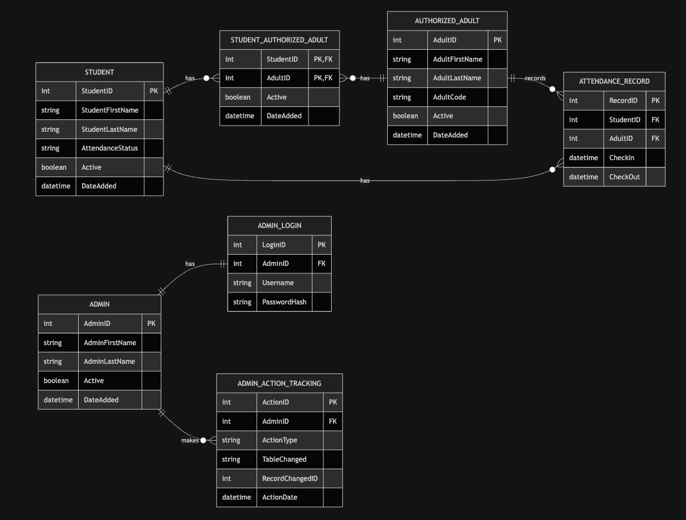
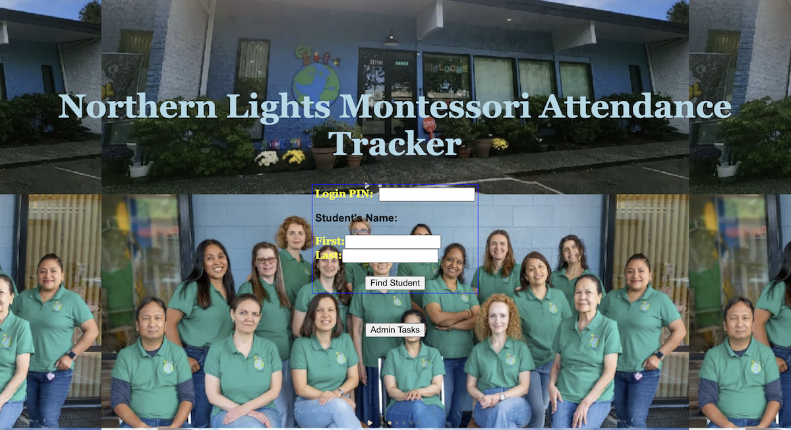
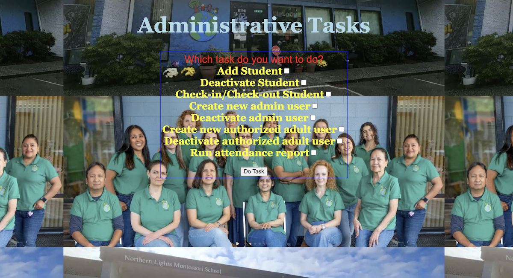

Full-stack team project • In progress
Montessori Student Attendance Tracker
This is a team coursework project for Northern Lights Montessori School. The goal is to create a web app that supports a simple attendance workflow where authorized adults can check students in and out. The project is still in progress, so the current version focuses on the main attendance flow, database structure, backend routes, and an early admin task page.

Problem and Objective
The school needs a clearer way to record student check-ins and check-outs with timestamps. The main objective is to connect student records, authorized adult information, and attendance status so the school can track who checked a student in or out and when it happened.
Technical Implementation
The current project uses JavaScript, React, Node.js, Express, and MySQL. The frontend includes an attendance tracker page and an admin tasks page. The backend includes routes for verifying an adult PIN, finding the matching student, and toggling the student's attendance status between checked in and checked out.
Challenges and Solutions
One challenge was making sure the backend routes matched the database structure as the project requirements became clearer. We needed to connect students, authorized adults, adult codes, and attendance records in a way that supported the main check-in/check-out workflow.
The solution was to focus first on checking the authorized adult code and finding the correct student. Other features, like admin tools, reports, and security improvements, were left for future work.
Results and Impact
We got the main attendance workflow working, including checking an authorized adult code and finding the correct student.
Through this project, I practiced designing the database structure, writing SQL queries, connecting backend routes to the data, and contributing to project documentation. It helped me better understand how database design, backend logic, and user workflow need to work together in a full-stack app.
Project Screenshots
These screenshots show the database design/ERD, current attendance form and admin task page.
Database Design / ERD

Attendance Tracker Page

Administrative Tasks Page

Code Snippet
This snippet shows part of the backend route that verifies an authorized adult PIN and checks whether the entered student name matches a student connected to that adult. This is one of the main pieces of functionality because it connects the check-in/check-out workflow to the database.
app.post("/verify-pin", (req, res) => {
const { pin, firstName, lastName } = req.body || {};
const pinString = String(pin || "").trim();
if (!pinString) {
return res.status(400).json({
success: false,
message: "Missing PIN"
});
}
const conditions = [
"aa.AdultCode = ?",
"s.Active = TRUE",
"aa.Active = TRUE",
"saa.Active = TRUE"
];
const params = [pinString];
if (firstName && lastName) {
conditions.push("s.StudentFirstName = ?");
conditions.push("s.StudentLastName = ?");
params.push(firstName.trim(), lastName.trim());
}
const sql = `
SELECT s.StudentID, s.StudentFirstName,
s.StudentLastName, s.AttendanceStatus
FROM STUDENT s
JOIN STUDENT_AUTHORIZED_ADULT saa
ON s.StudentID = saa.StudentID
JOIN AUTHORIZED_ADULT aa
ON saa.AdultID = aa.AdultID
WHERE ${conditions.join(" AND ")}
`;
db.query(sql, params, (err, results) => {
if (err) {
return res.status(500).json({ error: err.message });
}
if (!Array.isArray(results) || results.length === 0) {
return res.json({
success: false,
message: "Invalid PIN or no matching student"
});
}
res.json({ success: true, student: results[0] });
});
});Future Enhancements
Future improvements include completing the remaining backend and admin functionality, improving the design consistency across pages, adding stronger input validation, improving password security, and polishing the README and other project documentation.